If Tomorrow Never Comes
YouTubeArtiest: Garth Brooks
Opent in een nieuw tabblad.
Lees het geselecteerde bronnenoverzicht
Bestandsnaam: texasFlag.jpg
Categorie: Landschap. Opent in een nieuw tabblad.
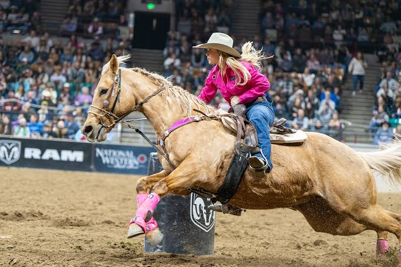
Evenementen & PostersBestandsnaam: rodeo.jpg
Categorie: Evenementen & Posters. Opent in een nieuw tabblad.
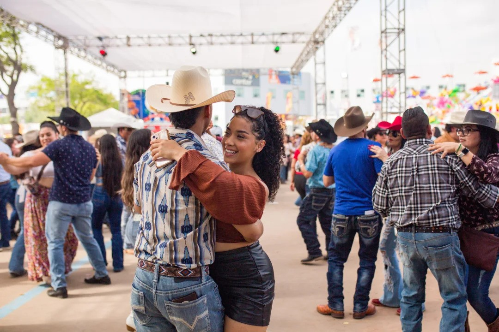
Evenementen & PostersBestandsnaam: CountryDay.jpg
Categorie: Evenementen & Posters. Opent in een nieuw tabblad.
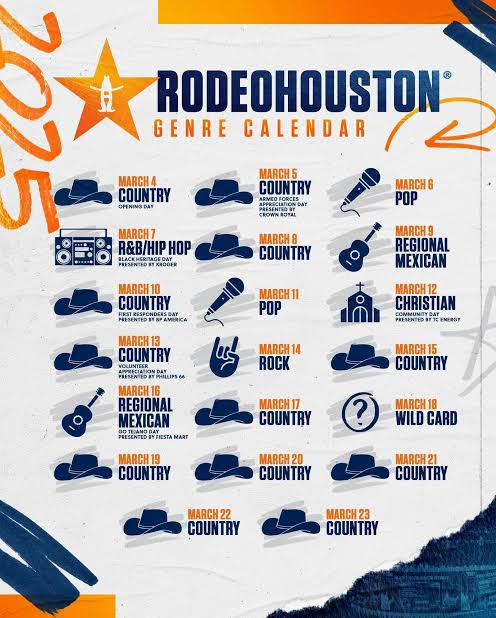
Evenementen & PostersBestandsnaam: FestivalPoster.jpg
Categorie: Evenementen & Posters. Opent in een nieuw tabblad.
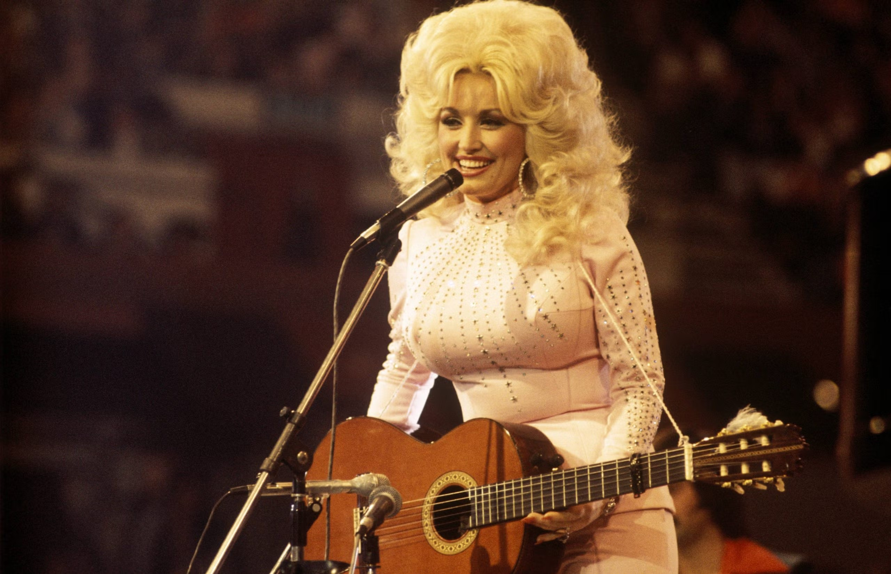
ArtiestenBestandsnaam: artist-dolly.jpg
Categorie: Artiesten. Opent in een nieuw tabblad.
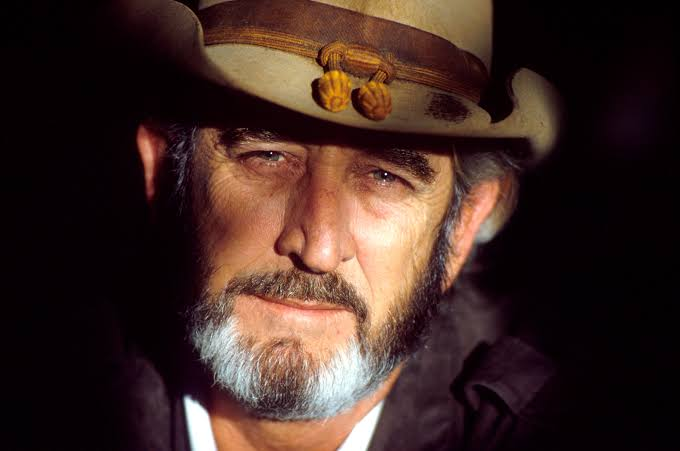
ArtiestenBestandsnaam: artist_don.jpg
Categorie: Artiesten. Opent in een nieuw tabblad.
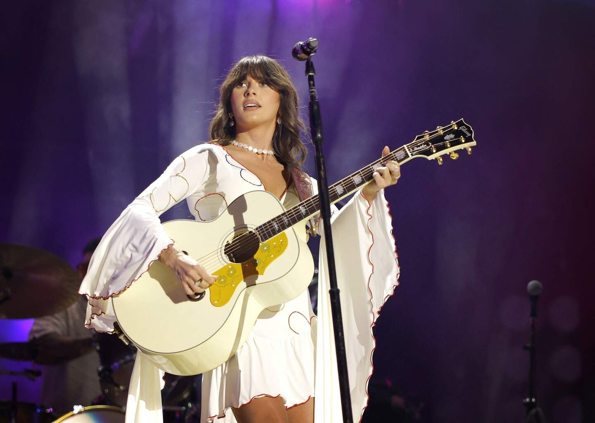
ArtiestenBestandsnaam: artist_ella.jpg
Categorie: Artiesten. Opent in een nieuw tabblad.
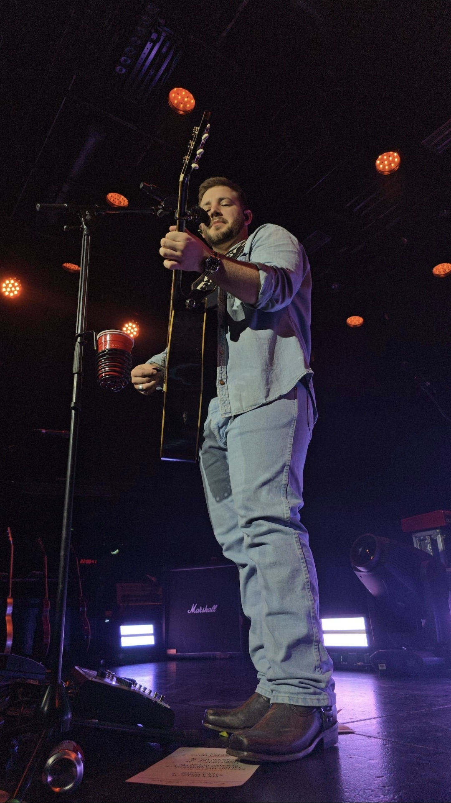
ArtiestenBestandsnaam: artist_kameron.jpg
Categorie: Artiesten.
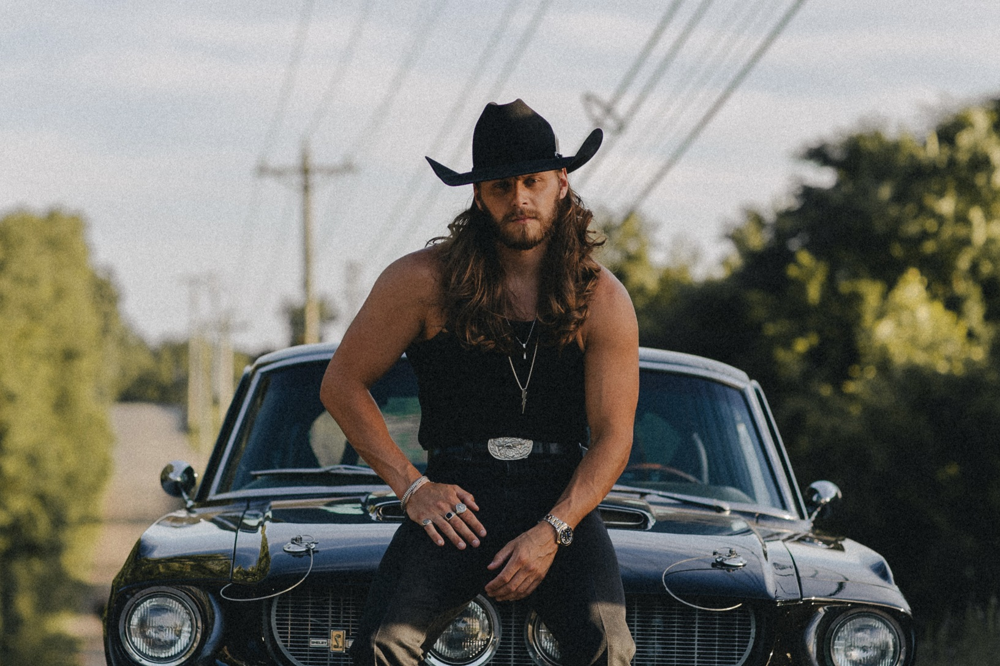
ArtiestenBestandsnaam: artist_warren.jpg
Categorie: Artiesten. Opent in een nieuw tabblad.
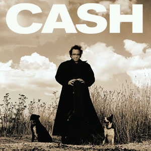
TijdlijnBestandsnaam: superstars_2.jpg
Categorie: Tijdlijn. Opent in een nieuw tabblad.
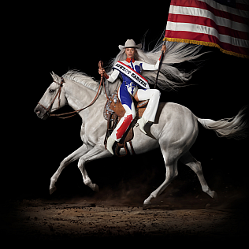
TijdlijnBestandsnaam: modern_3.png
Categorie: Tijdlijn. Opent in een nieuw tabblad.
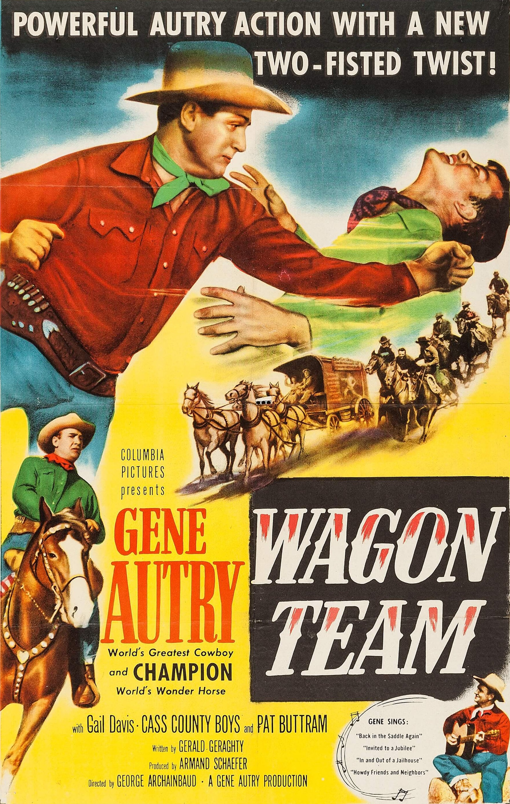
TijdlijnBestandsnaam: radio_3.jpg
Categorie: Tijdlijn. Opent in een nieuw tabblad.
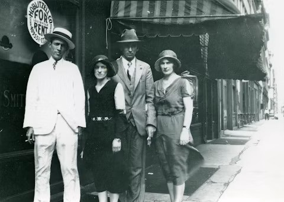
TijdlijnBestandsnaam: radio_2.jpg
Categorie: Tijdlijn. Opent in een nieuw tabblad.
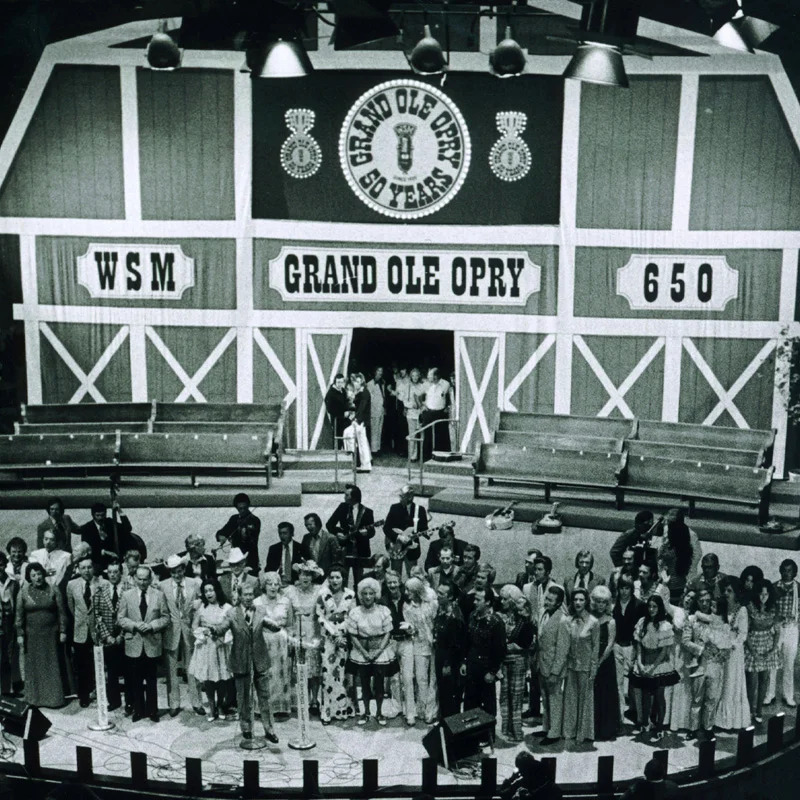
TijdlijnBestandsnaam: radio_1.jpg
Categorie: Tijdlijn. Opent in een nieuw tabblad.
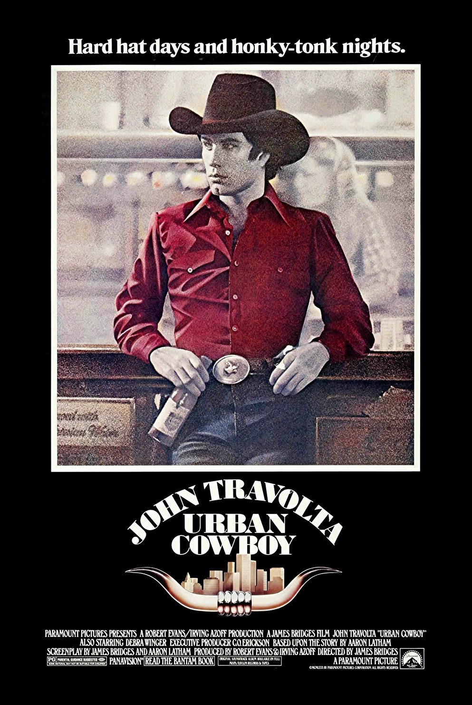
TijdlijnBestandsnaam: outlaw_3.jpg
Categorie: Tijdlijn. Opent in een nieuw tabblad.
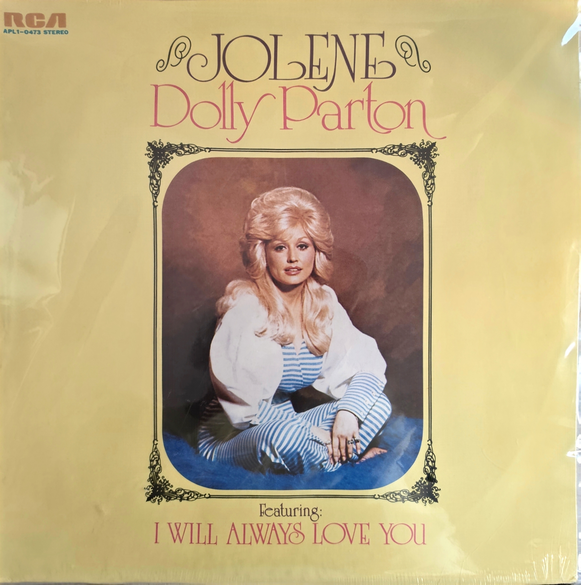
TijdlijnBestandsnaam: outlaw_2.jpg
Categorie: Tijdlijn.
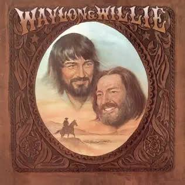
TijdlijnBestandsnaam: outlaw_1.jpg
Categorie: Tijdlijn. Opent in een nieuw tabblad.
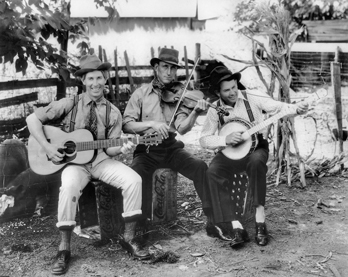
TijdlijnBestandsnaam: roots_3.png
Categorie: Tijdlijn. Opent in een nieuw tabblad.
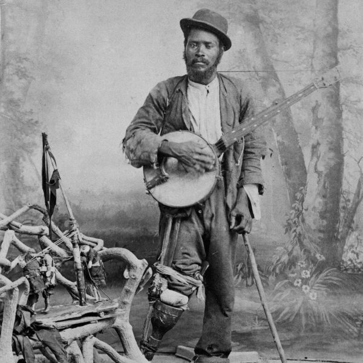
TijdlijnBestandsnaam: roots_2.jpg
Categorie: Tijdlijn. Opent in een nieuw tabblad.
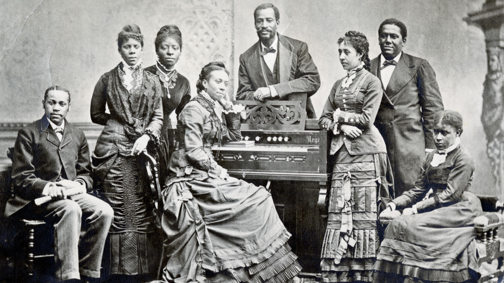
TijdlijnBestandsnaam: roots_1.jpg
Categorie: Tijdlijn. Opent in een nieuw tabblad.
Overzicht van artikelen, musea en archieven die zijn geraadpleegd voor het onderzoek.
Achtergrondinformatie over de geschiedenis van countrymuziek en de Amerikaanse cultuur.
Historische documentatie over de oorsprong van Honky Tonk, Outlaw Country en de moderne countrymuziekindustrie.
Gedocumenteerde geschiedenis van de roots, vertakkingen en culturele impact van countrymuziek.
Online encyclopedie en academische artikelen over de geschiedenis van countrymuziek.
Onderzoek naar traditionele Amerikaanse volksmuziek, bluegrass en vroege verhalen verteld via liedjes.
Overzicht van de rijke geschiedenis van countrymuziek, artiesten en locaties.
Thematisch onderzoek naar de muzikale tradities en ontwikkeling van countrymuziek.
Een beknopt historisch overzicht van het ontstaan en de evolutie van het genre.
Artikelen over de invloeden en muzikale tradities die country gevormd hebben.
Tijdlijn en historische artikelen over de wortels van countrymuziek en iconische artiesten.
De YouTube-video’s die bij de gebeurtenissen op de Story-pagina worden gebruikt. Open de oorspronkelijke video via de bijbehorende link.
Artiest: Garth Brooks
Artiest: Carrie Underwood
Artiest: Hank Williams
Artiest: Patsy Cline
Artiest: Jeannie C. Riley
Artiest: Florida Georgia Line
Artiest: Chris Stapleton